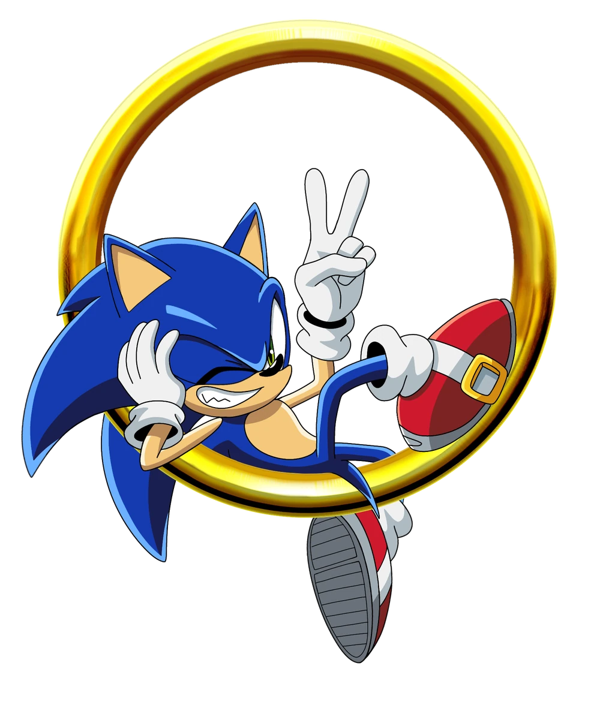
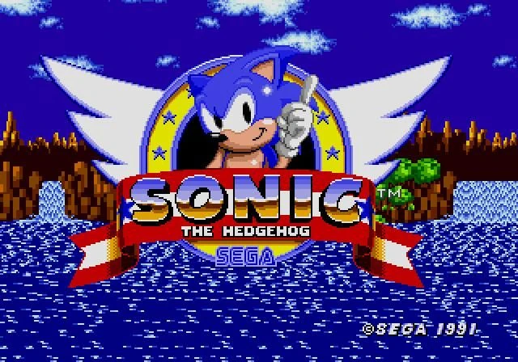
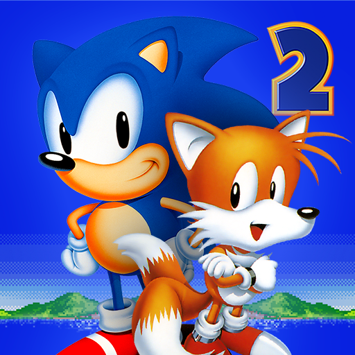
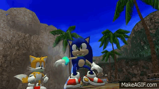
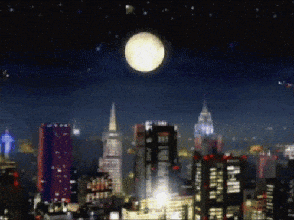

Concepto y creación
Mientras que varias personas han estado involucradas en la creación de Sonic, el artista Naoto Ōshima, el diseñador Yuji Naka y el programador Hirokazu Yasuhara generalmente son acreditados por la creación del personaje.
Algunos juegos
| Imagen | Juego | Descripción |
|---|---|---|
 |
Sonic the Hedgehog (1991) | El juego original que presentó a Sonic al mundo. Lanzado para Sega Genesis, estableció la fórmula de velocidad y plataformas de la saga. |
 |
Sonic the Hedgehog 2 (1992) | Introdujo a Miles "Tails" Prower como personaje jugable y el modo doble jugador. |
 |
Sonic Adventure (1998) | El primer juego 3D de la saga, lanzado para Sega Dreamcast. Presentó seis personajes jugables con historias entrelazadas. |
 |
Sonic Adventure 2 (2001) | Continuacion del primer sonic adeventure, lanzando tambien para la dreamcast. Sonic Adventure 2 es notable por marcar el debut de Shadow the Hedgehog , un erizo negro que se parece a Sonic the Hedgehog con poderes similares, y Rouge the Bat , una enigmática cazadora de tesoros y rival de Knuckles the Echidna. |